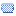

Dither drawn for the actual size.
The texture uses whole pixels on a 16 × 16 grid. The samples below are rendered at their real browser sizes; the enlarged view shows the transparent gaps.
LIGHT BROWSER TAB

16 px32 px
64 px
8× detail
Each gap is transparent.
Each gap is transparent.
DARK BROWSER TAB
16 px
32 px
64 px
8× detail
Each gap is transparent.
Each gap is transparent.